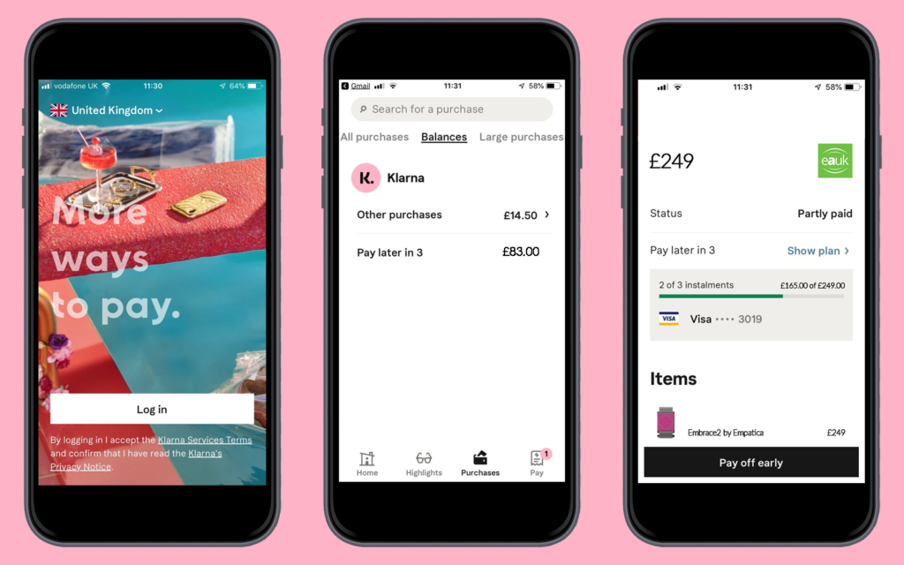

you told me that you hadn’t bought one thing online during this lockdown that made you feel better, even just for a moment, then you’ve got to be joking,” 26-year-old Amanda* says. “If it was a dress that you didn’t need because you weren’t even able to go outside, or something that you would never have normally bought, it made you feel better during a time where you were reaching out for any sense of normality.”
In even simpler terms: buying things makes us feel good – most of the time. The Spring and Summer of 2020 have seen the way people spend their money take several turns. Those who have been furloughed due to the Coronavirus pandemic may have seen their savings climb up as they spend less money on eating out, drinking, museum visits, and travel, and so have turned to spending their money online. The thrill seeker type moment you get when you click ‘Pay Now’ has been amplified by being confined to our homes – and not without consequences.
As our relationship with money changes, so do the avenues we take to spend it. Buy Now Pay Later (BNPL) schemes have recently surged in popularity, with research from comparison website Compare The Market finding that nearly a quarter (23%) of 18-24-year-olds were more likely to use BNPL schemes to fund purchases since the government lockdown.
At a time where recession and redundancies are looming, most banks are enforcing extra measures to protect their customers from financial distress – boring, tedious, and unexciting measures.
Enter BNPL – magical, lifesaver, and stress-free
spending.

Many are likely already familiar with one of the largest buy now pay later UK services, Klarna. Partnering with over 205,000 merchants globally, including familiar brands like ASOS, Topshop and Marks & Spencer, the Swedish group’s millennial pink branding and promise of the ‘smooothest’ checkout experience you’ve ever had is undeniably tempting.
A ‘try before you buy’ experience, Klarna appears as a payment option when it comes to online checkouts – a small pink dot and the words ‘pay later with Klarna’, or whichever phrase the retailer chooses. Customers can either use this straight away for small purchases or wait to be accepted for larger ones, and then have a set amount of time left to pay for their online order. In practical terms, a customer could have a set of clothes delivered, try them on, return any they don’t like, and then only pay for what they keep.
The ease with which you can checkout is no coincidence: whilst only 16% of Generation Z say they have bought items using BNPL schemes, of those who had, almost two thirds (64%) said they had spent more than they would normally on this type of purchase. The psychology behind it settles in as we also tend to think that our economic circumstances, albeit troubled now, are sure to only get better.
As we spend more per purchase with BNPL apps and our view of our money becomes skewed, the dangers become more apparent, particularly further along in the buying process. If you run through a couple of pretend purchases, the ease of use and information used and presented can be more of a warning sign than anything else. What stops users from getting carried away? If a shopper uses BNPL services on multiple sites, a greater amount of money could be taken than expected, and what remains unclear is what happens if the repayments are missed.
What Klarna doesn’t explicitly tell you is that if you pay late, pay less, or miss a payment, the promised 0% interest rate goes out the window. It will jump up, possibly to 19% (APR). Users would be paying much more than £50 each month, worsening any money problems, leading the Financial Times to call these schemes ‘the new debt traps for millennials.’
With so many of these schemes aimed at 18-35-year olds, concerns that they could send consumers spinning into debt are well founded. According to the same survey by Compare The Market, nearly 40% of people aged 25-34 who had used these schemes said it had damaged their credit score. The research also found that this age group is
particularly dependent on BNPL, as the instinct to spread your finances over time is considered a ‘millennial’ approach to money.
WHAT DOES IT REALLY MEAN TO GO INTO DEBT?
It is now estimated that as many as 10 million people have already used a BNPL scheme like Klarna (or the slightly lesser known Clearpay.)
A report from Worldpay shows that BNPL plans for online shoppers
are growing rapidly at a rate of 39% a year, allowing customers to delay payment or purchase in interest-free instalments. Financial harm is reaching younger generations in multiple ways, through bank loans, credit cards got interest free
through balance transfers, secret credit cards, or BNPL schemes.
Twenty-five-year old Bethany*, a youth counsellor from Manchester, turned to BNPL schemes online at aged 21 to fund what she calls a ‘microshopping’ addiction. “Not having to pay for anything at the checkout was absurdly easy. I would rationalise it to myself and tell myself I’d pay it off with my next paycheck and that it was really a good way for me to learn how to balance my money.”
“Whilst I was in the throes of what was really an addiction, I probably spent around £700 using alternative methods of payment, particularly online, or through store cards. I would beg friends and family for money or gift cards to my favourite shops for my birthday or Christmas, and by January 2020 I had maxed out my credit card.”
A recent study by Credit Karma showed that 25% of young people in debt say that their bank balance is holding them back when it comes to long-term financial goals like owning a car or a house, and around 30% can’t afford the bare essentials.
Those who’s income ranges from low to middling can be hugely affected by a sudden change in their economic situation and often find themselves cutting back on basic needs and household essentials.
Take away the physical aspect of being in debt and you’re left with the constant stress, crippling anxiety, and overwhelming fear that comes with being inundated by debt and the methods in which it is collected. The everyday routine can begin to feel unmanageable, so much so that more than 100,000 people attempt suicide every year because of outstanding debts.
The main issue many seem to take with BNPL schemes is the way in which they market their service – the idea that debt is really just a ‘quick fix.’ The woman behind financial Instagram account @myfrugalyear, Clare Seal, speaks candidly about debt and her personal economic situation, and why BNPL schemes had such an impact on her spending:
“Not all debt is bad, and not all debt is equal. These schemes can be really useful [..] for any number of different reasons. My issue with BNPL is that it is so unbelievably easy. The credit checks are minimal, and it’s a slick and frictionless way of accruing debt without even really needing to consider it - but the consequences of not keeping up with repayments are very, very real.”
An anonymous former BNPL user echoes Seal’s thoughts: “I had to stop using Klarna as it was just becoming too easy to buy things. I haven’t used it in months – I was beginning to have to use my credit card if I wanted to go to buy groceries because I had to pay back Klarna out of my normal budget.”

Bethany* explains her situation via Zoom
“The terminology seems so easy as well because they’re promising no issues, essentially – if you pay it all back on time. But I don’t really know what a credit check is, what interest means, what can and can’t impact my credit score. I’m not saying that’s the fault of BNPL companies, but it sort of comes across like it’s not necessary to know about it – it’s just that easy.”
NO DRAMA - JUST KLARNA
W
ith the look of a company that can make all your online shopping dreams come true, Klarna boasts ‘85 million consumers across 205,000 merchants in 17 countries.’ If BNPL methods are secretly out to bankrupt you, why do people keep using them?
Using my paypal loan to pay off klarna debt pic.twitter.com/iRMWHnNgcE
— Poppy (@poppybillingham) January 12, 2020
“In terms of buying behaviour, it’s of peak relevance to discuss what keeps users coming back, particularly when it comes to online shopping,” says consumer psychologist Kate Nightingale. “Design and ease of use play significant roles, and arrangements with organisations like Klarna and BNPL in general heighten that ease.” Nightingale is right – even the idea of getting up from the computer to find your bank card can put some people off purchasing right away, so it becomes better not to leave it to chance. As people adapted to a new environment during lockdown and readjust slightly after, many would still rather shop online than go out to a physical shop, citing safety reasons as the main factor for keeping them at home.
Isabella* over Zoom
“I worked from home before the pandemic anyway – I’m a graphic designer who’s been freelancing most of her career,” says 26-year-old Isabella*. She names BNPL schemes as one of the main forces that helped her travel further into what she, like Bethany, also names “a crippling addiction. Shopping is a fundamental part of our culture, and for someone who doesn’t really have to leave the house much anyway, I’m very used to shopping online for most things.”
“I’ve often felt very isolated and unhappy. It’s not something I speak about with friends; most people don’t know that I’m struggling this way. I’m seen as such a rational person by many – I have a house, a good steady flow of work, a nice boyfriend. But I’m just driven by something that I feel is out of my control, which leads me to be out of control with my finances. It’s shameful.”- Isabella
A
fter signing up to Klarna for the main purpose of buying a new coffee table for her home, splitting the payment over 6 months, Isabella continued to use it for smaller purposes. “A new pair of shoes here, a gift for a friend’s birthday there, it didn’t seem to make much difference at the time.”
She claims she never received any messages from Klarna when she forgot to make a repayment every so often, until her payment was passed on to a debt collection agency. Working from home, she became fearful of people showing up to her house and demanding she repay her bill as soon as possible.
“It’s a really odd way of describing it, but it begins to feel like you’ve been betrayed by a friend,” she says. “It looks and sound so easy, and then you’re suddenly in 500 plus pounds worth of debt. It’s not worth it.”
A company with a slogan of ‘no drama, just Klarna,’ pink branding and a recent advert including rapper and business mogul Snoop Dogg clearly doesn’t worry too much about those who are calling for the company to take on more responsibility.
Speaking to the Evening Standard, executive creative director at Coley Porter Bell, Ogilvy’s specialist branding agency, James Ramsden, echoes Isabella’s thoughts. “We are also witnessing the visual and verbal language of brands and sectors change.”
“Yes, people still want financial brands to feel trustworthy and stable, but they also want them to be easy to do business with, friendlier and more contemporary, less formal. The ultra-traditional look and feel of institutional banks is being complemented or replaced by brands that are friendlier, fresher and more efficient.”
YOUNG WOMEN IN BIG DEBT
What users like Bethany and Isabella have demonstrated is that sometimes, these decisions are far from considered, no matter how well responsibilities are managed, how clever you are, or how settled you may be. All specificities aside, age and gender have an impact on what kind of decisions we make, especially when it comes to desire-based decision making.
BNPL schemes are increasingly marketed towards 18-35-year olds, leading to a worrying increase of young people in debt, and an overwhelming amount of those people are women.
Whilst only a slightly larger percentage of women than men prefer to shop online (72% of women, 68% of men), women employ less logic when it comes to trailing the web for purchases. Men may see the shopping experience as driven towards finding and collecting just one thing, whereas women enjoy the experience more overall.
Women are also more likely to make impulse and unplanned purchases, be triggered by advertisements, special offers or sales, or follow a personal recommendation. They are also more likely to see shopping as a way to improve their mood on a down day.
“People assume that you got into debt because you’re just another silly girl who couldn’t pay her bills on time because she doesn’t understand the value of money or just wanted a new pair of jeans.
It’s incredibly damaging and perpetuates the idea that women don’t understand how to handle their finances just because they’re women – but we’re also rarely included in the conversations that might make this easier for us to understand and control. Debt is already such a lonely place to be, but it’s even more harmful when it becomes sexist.”
- Bethany
Research from market research company Roy Morgan shows that women are significantly more likely to use BNPL services than men and indicates that most BNPL schemes are deliberately targeted towards women. Klarna markets heavily alongside brands with a primarily female customer base, and a quick look at their Instagram grid shows a specific emphasis on female-centred content and products.
Financial campaigner Alice Tapper, whose campaign calling for better regulation to protect young and vulnerable consumers from “misleading” BNPL products, #KlarNaa, outlines on her website, Go Fund Yourself, that an overwhelming number of stories she gets are from young women.
"This is deeply concerning when insolvencies among young women are growing faster than in any other group, according to an analysis of ONS data by UHY Hacker Young,” Tapper tells Refinery29. Official data shows that young women are struggling the most with their finances – the data Tapper references shows that the number of insolvencies among women aged 18 to 24 jumped almost a quarter last year and rose to 3,930 in 2018 from 3,175 in 2017.
Klarna are eager to point out that they have introduced new tools to help those struggling with repayments and are always looking for new ways to promote financial literacy.
Their resource tool KlarnaSense discusses shopping psychology, has shopping personality quizzes you can take, and an abundance of articles dedicated towards showing readers how to spend smarter.
We know that sometimes it’s easy to get over-excited and a little carried away with those impulse purchases,’ offers the site. ‘So slow down those millions of thoughts, take a deep breath and find that bit of zen, then ask yourself: do I love it? Will I use it? Is it worth it?’ Essentially – apply the ‘rule of three,’ and you’ll have won over your subconscious mind and become a more measured and smarter shopper.
I
It doesn’t help that many young women today feel the added pressure of social media like Instagram to portray a certain trendy look or lifestyle. A recent study by Credit Karma found that Gen Z and millennials collectively spend £400 a month imitating Instagram stars, with seven in 10 going into debt as a result.
Whilst no one is looking to revoke the need for personal responsibility, surely this can be forgiven when Klarna’s website looks more like a fashion retailer than a financial service? Young women using these services are presented with money as an object that will make them happy, but lack of understanding as to how to manage it brings along the multitude of emotions associated with going into debt.
“When I moved in to a new flat with my boyfriend, I became pretty obsessed with posting pictures on Instagram as we were renovating and finding new things for the place,” says thirty-year-old Gemma*. “Eventually it wasn’t even fun anymore, or a thing we did together – I just became so addicted to recreating other Instagram or Pinterest pictures, redoing a room each month because I was convinced it didn’t look right. I didn’t really register just how much I was spending.”
Having been made redundant at the time, Gemma admits she was mostly spending her boyfriend’s money using BNPL services, not becoming aware that she was scheduling payments for around the time her boyfriend’s paycheck came in. “Looking back now, I’m so ashamed – I basically jeopardised my relationship because of social media. I became very depressed and concerned for myself.”
She falls silent for a minute when asked how much debt she racked up.
“Roughly £23,000, or thereabouts.”
She also received minimal communication from the BNPL services she used, including AfterPay and Klarna.
RETHINKING BNPL
Gemma’s experience, although niche, is not uncommon. In 2018, Lissette Calveiro revealed that she had fallen $10,000 into debt trying to make it as an Instagram star, while Australian 27-year-old Fiona Melbul revealed that she spent roughly £5,000 over six weeks on a trip to Disneyland trying to get the perfect picture to share with her followers.
A survey done by BBC Radio 5 and HuffPost UK found that over a third of 20 to 29-year olds admitted to having spent money they otherwise would not have spent thanks to social media posts and ads from influencers. The fact that social media isn’t truly a real depiction of most people’s lives turns Instagram into a spending competition – what influencers actually pay for themselves is minimal in relation to what they are gifted and asked to advertise.
“The first thing I did, before even calling up the agency to create a payment plan, was delete my Instagram account. It just facilitated my spending so much and so easily. Then I deleted my Klarna and AfterPay accounts and just payed directly to the collection agency. Even now, seeing the Klarna adverts on buses in London sends a shiver down my spine!”- Gemma
Gemma, Bethany, Isabella, and Amanda all started their stories with a similar sentiment – BNPL services do make a difference for the better, when used properly, at the right time. A lack of regulation, information, and communication is what led them to become a hinderance and detrimental to their financial states.
A bank that wants to be more useful and flexible to younger clients in a fast changing, and also flagging, economy is not a bad bank – but one that misleads and fails to protect its customers is. The adage that a fool and their money are soon parted may be true, but smart people and money are parted all the time – more often than not by a service that grows out of control and remains unregulated, it seems.
As Bethany says, “To any other women suffering with debt out there – you’re not an idiot. Just prioritise your spending, pay off your debts, budget well, and don’t trust cool pink websites that pretend to be your friend!”